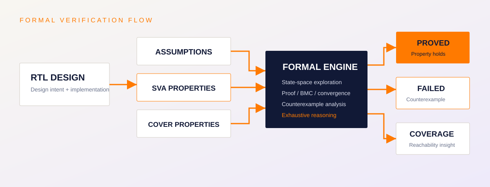
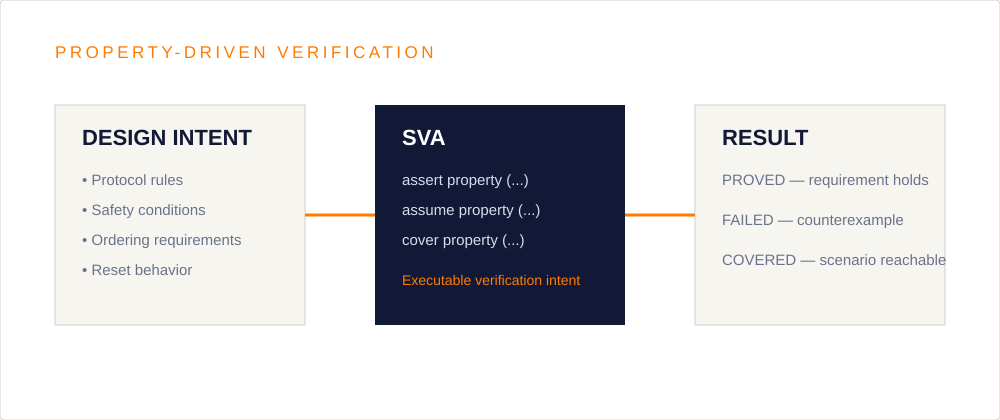
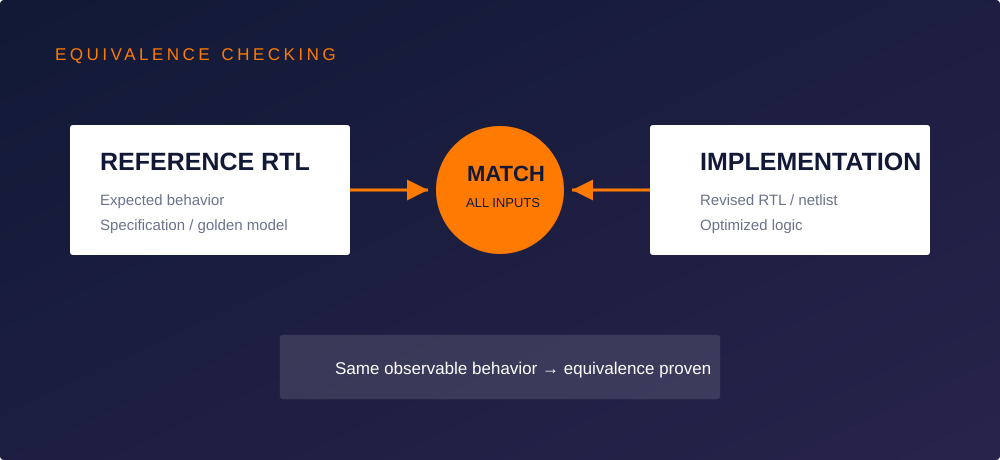

Block-level signoff
Prove critical control and datapath behavior before integration.
 TERASILICON IQENGINEERING THE FUTURE OF SILICON
TERASILICON IQENGINEERING THE FUTURE OF SILICON
TERASILICON IQ / CAPABILITY
Property Checking, Equivalence, Formal Debug, Convergence Support.
SIGNOFF-DRIVEN ENGINEERING
Terasilicon IQ provides focused semiconductor engineering support for teams moving from implementation through verification, closure and signoff.
ENGINEERING APPROACH
Formal verification uses mathematical proof to exhaustively analyze RTL behavior against intended properties and design intent. It is especially useful for finding corner-case failures that simulation may miss and for building high confidence before signoff.
WHERE IT FITS
Our engineering support is structured around the actual closure problem: understand the requirement, isolate risk, apply the right analysis or verification method, and provide clear evidence for the next signoff decision.
Engagement can be focused on a specific block, flow, violation class or closure milestone, while keeping communication aligned with the wider semiconductor team.
APPLICATIONS
Prove critical control and datapath behavior before integration.
Check interface assumptions and cross-block behavior at system boundaries.
Re-run focused proofs after ECOs, feature changes and bug fixes.
Provide formal evidence for corner cases that are difficult to reach with simulation.
FORMAL VERIFICATION IN PRACTICE
Formal verification turns design intent into properties that can be exhaustively analyzed across legal state transitions. It complements simulation by targeting corner cases, control logic, protocol behavior and equivalence between design versions.



Tell us what you are trying to close, verify or implement and we can discuss the engineering support that fits your project.
Discuss your requirement →